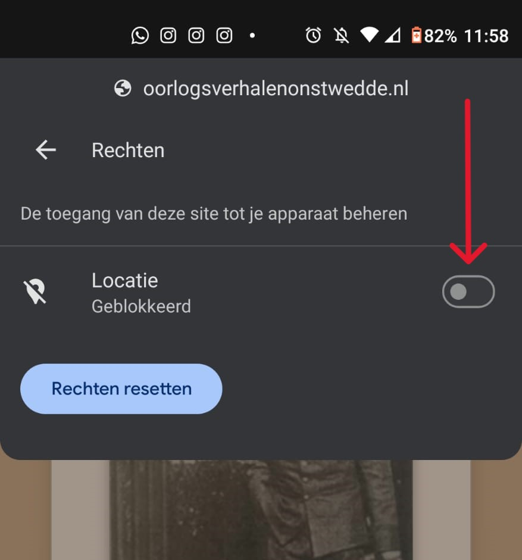

U kunt terecht voor specifieke vragen bij De Woldbrink in Onstwedde.
Klik op het icoon zoals aangegeven in de afbeelding.
Klik vervolgens op het tabje "Rechten" zoals aangegeven in de afbeelding.
Klik op de schakelaar zoals aangegeven in de afbeelding.
U hebt nu succesvol de locatie rechten weer aangezet!
Klik op het icoon zoals aangegeven in de afbeelding.
Klik vervolgens op de ... zoals aangegeven in de afbeelding.
Klik vervolgens op het tabje "Locatie" zoals aangegeven in de afbeelding.
Klik in dit menu op "Sta toe" zoals aangegeven in de afbeelding.
U hebt nu succesvol de locatie rechten weer aangezet!
Wanneer u er voor kiest om geen locatie op te geven, maakt de app geen gebruik van de functie om verhalen pas te ontgrendelen wanneer u in de buurt bent. Alle verhalen zullen dan automatisch beschikbaar zijn. Hierom wordt het aanbevolen om locatie rechten te geven, zodat deze functionaliteit werkt.
Tijdens uw wandeling, komt u op verschillende belangrijke plekken waar verhalen over zijn geschreven. Deze verhalen zijn gebonden aan een locatie. De locaties van de verhalen kunt u hier bekijken. Wanneer u deze locatie bereikt, ontgrendeld dit verhaal en zal het beschikbaar gesteld worden om het verhaal te bekijken met de knop "Bekijk verhaal". Op deze pagina kunt u het verhaal lezen of beluisteren. Hierna kunt u uw route vervolgen naar de volgende locatie.
Dit is een bekend probleem met GPS locatie. Wanneer u wifi ingeschakeld hebt is uw locatie minder nauwkeurig. Voor de meest nauwkeurige locatie zet u uw Wifi uit en alleen uw mobiele data aan.